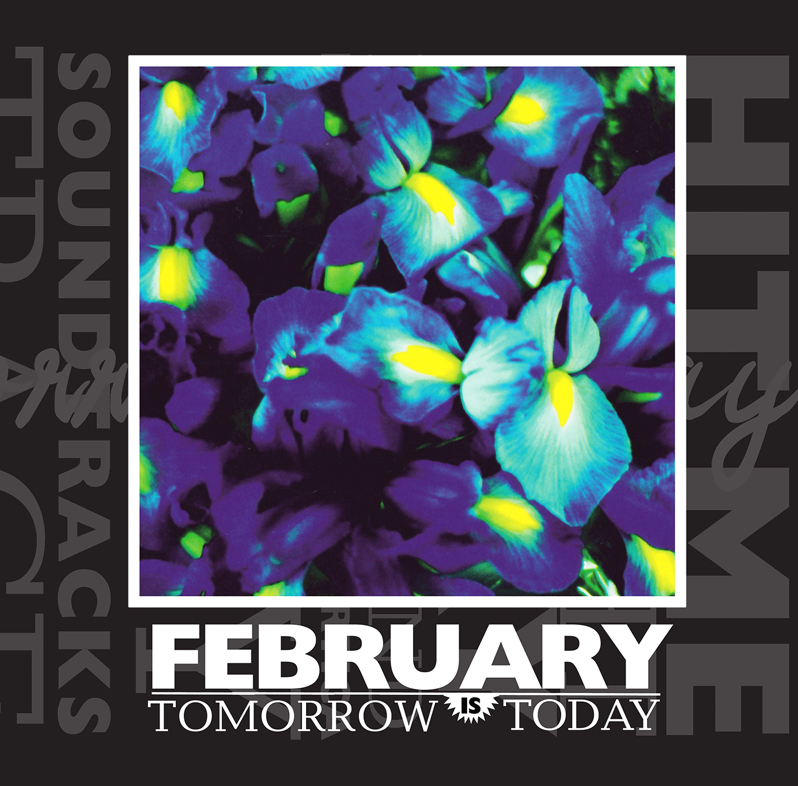

Tomorrow is Today
Saint Marie Records, 2016 // Carrot Top Records, 1997
Tracklist
- 1. Hit 3:25
- 2. Caught 4:44
- 3. Slinky 4:04
- 4. Make A Sound 2:46
- 5. Pink Slippers In Anarctica 3:35
- 6. Easy 3:18
- 7. Soundtracks 3:50
- 8. Trace 3:27
- 9. Riproar 2:19
- 10. lan 5:36
- 11. Swoon 3:23
- 12. Pulse 6:19
- 13. Rue Mouffetard 6:28
- 14. Peacock 6:30
Credits
- Written by February
- Produced by February, Richard Werbowenko
- Recorded and Mixed by Richard Werbowenko at Third Ear Studio, Minneapolis
- Guitar, Electronics, Sound Sculptures: Damian Neubauer
- Drums, Percussion, Programming: Todd Jeremia Reubold
- Bass, Piano, Voice, Bells: Steven J. Saari
- Vocals, Keyboards: Amy Turany
- Flute: Julie Kasten
- Saxophone: Steve Clarke
- Trombone: Eric Nelson
- Trumpet: Jay Mote
- Additional Drum Loops on “Soundtracks”: Richard Werbowenko
- Strings Written and Arranged on “Peacock” by Luc Readinger